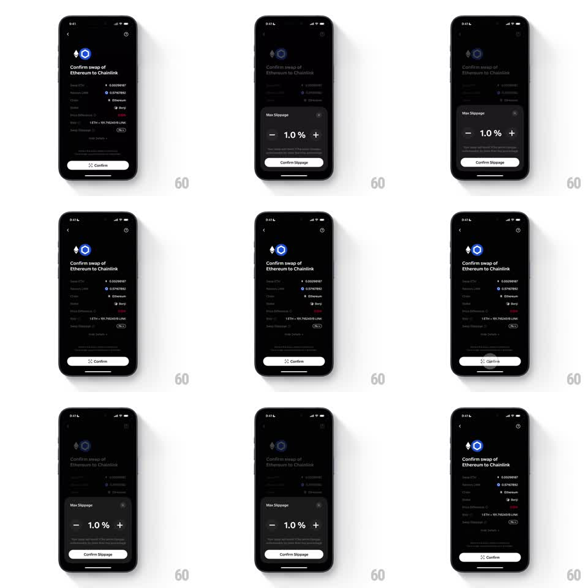

Media
Frame-by-frame

Rebuild this interaction 1:1: Family's swap confirm button morph - on the dark "Confirm swap of Ethereum to Chainlink" screen, opening the "Max Slippage" sheet (1.0% stepper) slides it up over the dimmed page, and confirming blends the sheet's "Confirm Slippage" button down into the page's "Confirm" button - one continuous button across the dismissal.

Rebuild this interaction 1:1: Family's swap confirm button morph - on the dark "Confirm swap of Ethereum to Chainlink" screen, opening the "Max Slippage" sheet (1.0% stepper) slides it up over the dimmed page, and confirming blends the sheet's "Confirm Slippage" button down into the page's "Confirm" button - one continuous button across the dismissal. ## Integration Integration: stack-agnostic spec - springs given as stiffness/damping, timed motions as duration + curve; map every value to your framework and animation library of choice. ## Scene Dark swap confirm screen: token pair glyphs (Ethereum diamond, Chainlink hexagon), "Confirm swap of Ethereum to Chainlink", detail rows (Swap ETH 0.002098187, Receive LINK 0.57167892, Chain, Wallet "Benji", Price Difference, rate line, Max Slippage 1%), and a white "Confirm" pill at the bottom. The sheet: "Max Slippage" title, "- 1.0 % +" stepper, explainer, white "Confirm Slippage" pill. ## Motion spec Pattern: sheet rise with button morph on dismiss. - Tap the slippage row: the page dims (scrim 50%, 200ms) and the sheet slides up (spring ~300/20, small overshoot), the stepper ticking with detents (value rolls 100ms per 0.1%). - Tap "Confirm Slippage": the sheet slides down (250ms ease-in) while its button detaches and morphs - traveling to the page's Confirm button position (bounds + corner radius animating, 300ms ease-in-out), its label crossfading "Confirm Slippage" -> "Confirm" mid-flight. - The page's slippage value updates with a digit roll (150ms) as the button lands with a settle (scale 1.03 -> 1, spring ~340/16). - Cancel path: the sheet slides down and the original Confirm button fades back in (150ms) - no morph. ## Calibration - The morph sells that both buttons are the same action at two depths. - During flight the button casts a lifted shadow; it grounds on landing. ## Reduced motion The sheet slides down and the Confirm button fades in (200ms); no flight. ## Don't miss - The stepper buttons have press states (scale 0.9, 100ms) distinct from the sheet spring. - The white pill style is identical in sheet and page - that is what makes the morph readable.